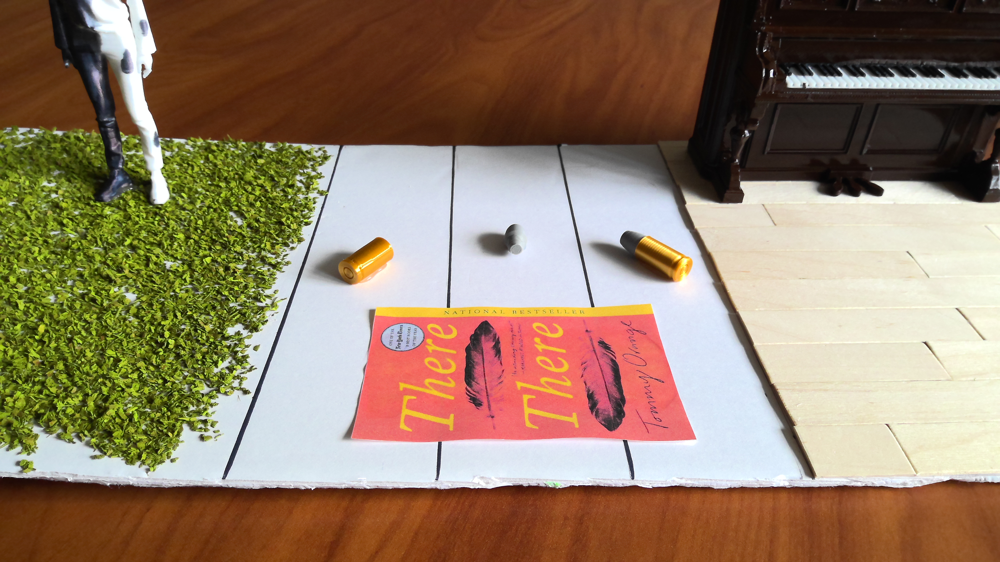

Tommy Orange — Diorama Interpretation

We are using the bullets from There There as a representation of how the violence of the past continue to impact the present and possibly the future.
The first bullet is an empty casing. This is meant to represent the past and how the violence of the past has already been "fired" and cannot be changed.
The second bullet is a live round. This is meant to represent the present and how the violence of the past continues to affect the present. Particularly how the trauma of the past still affects present day Native Americans, leading to desperation and violence in the present.
Finally, the third is an unused bullet, potentially waiting to be used. This represents how the cycle of violence has the potential to continue if no intervention is made. Key examples of intervention Orange presents to us are figures like Dene, who hopes to document and expose current-day Native struggles.
In front of the bullets, we have the book spread across the past, present, and future. This is meant to represent how the book itself is a tool that highlights the injustices of the past and their potential implications in the present or future. In other words, just like the bullets, the book calls attention to past injustices in a sort of "haunting" sense, and is somewhat of a call to action for the cycle of violence to end.